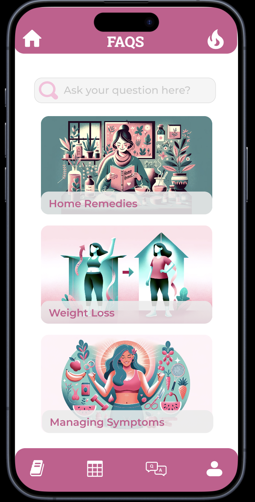
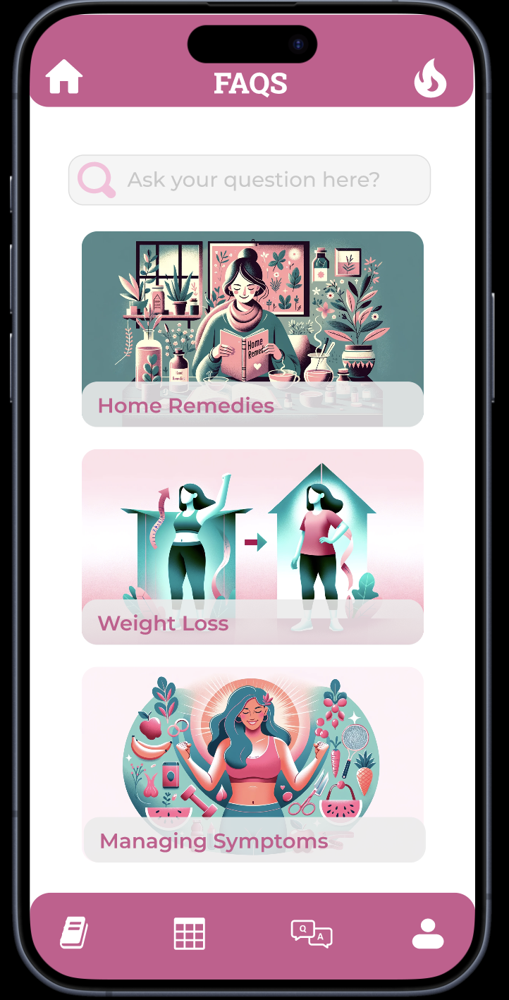

Objective
The “Shifa” app is a mobile solution designed to empower women managing Polycystic Ovary Syndrome (PCOS). It addresses key challenges faced by users, including unreliable information sources, fragmented tools for health management, and limited access to healthcare. With personalized health profiles, the app enables users to track symptoms, monitor menstrual cycles, and receive tailored nutrition and fitness plans. “Shifa” also facilitates medication adherence through reminders, provides access to consultations with certified doctors, and offers gamified features to motivate healthy habits.
Key Features
- Symptom Tracking: Allows users to log and monitor PCOS symptoms such as mood swings, acne, hair loss, and period cramps, with customizable options for individual needs.
- Menstrual Cycle Tracking: Tracks menstrual cycles, ovulation, and flow intensity, providing predictions and insights into cycle patterns.
- Nutrition and Diet Guidance Offers personalized meal plans tailored for PCOS management, including macro and micronutrient tracking and calorie intake monitoring.
- Fitness Tracker: Includes customized exercise routines and activity tracking to help users maintain a healthy weight and manage symptoms effectively.
- Medication and Supplement Reminders: Sends reminders for taking prescribed medications and supplements with dosage and timing details.
- Monthly Analysis and Insights: Provides visualized health trends and insights, such as sleep patterns, mood swings, and cycle irregularities, with options to share reports with healthcare providers.
- Forum and FAQs: Facilitates community engagement through discussion forums and a comprehensive FAQ section addressing common PCOS-related concerns.
- Gamified Streaks: Encourages consistent app usage and healthy habits with reward-based gamified features for completing daily goals.
- Doctor Chat Interface: Enables communication with certified doctors, including gynecologists, dermatologists, and endocrinologists, for personalized medical advice.
Gallery
1. User Research
2. Background Research
Post-its were used for initial brainstorming for which I aimed for the quantity of ideas over quality as it leads to a large variety of ideas, deferring judgement. Later on, all the ideas were categorized on the board through the sorting and sifting process.

Research on PCOS awareness and treatment gaps

Analysis of user challenges and healthcare access
3. Design Alternatives

4. Sketches


5. Storyboards and Scenarios
A visual representation of the app's user journey and design decisions!
Step 1: User logs in to the app.

Step 2: User selects health tracking options.

Step 3: Personalized health insights are displayed.
Step 4: User receives medication reminders.

Step 5: Community forum interaction.
Step 6: User reviews progress in the app.
6. Low-fi Prototyping

7. Colors and Icons


Usability Testing
Usability testing was conducted to ensure the app meets user needs effectively.
- Objectives and Evaluation Methods: The testing procedure for the Shifa app was tailored according to its functionality, usability, and effectiveness. Users were guided through tasks to evaluate app navigation, symptom management, and engagement levels.
- Testing Protocols and Environment: Testing was conducted in a controlled environment with female participants diagnosed with PCOS (ages 20–23). Participants were encouraged to think aloud while completing tasks to provide real-time insights.
- Data Collection and Analysis: Observers identified usability issues, analyzed pre- and post-test questionnaires, and compiled both qualitative and quantitative insights to address barriers and improve user satisfaction.
Mobile Approach
I optimized all UI designs strongly for mobile.
 
